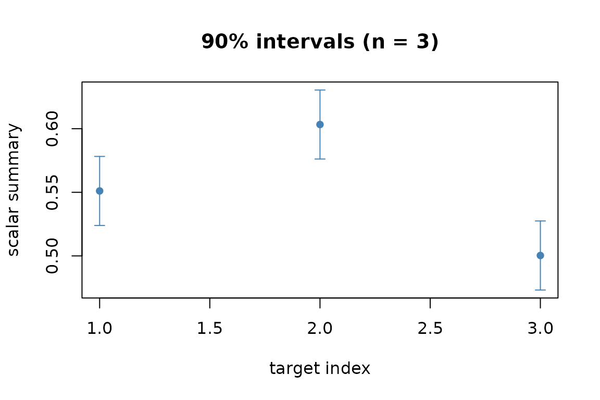

What this is
MetaHunt is a privacy-preserving meta-analysis tool. You start with
per-study estimated functions and a row of metadata for each study, and
end with a predicted function (or scalar summary) for a new study,
together with a conformal prediction interval. This vignette shows the
shortest possible end-to-end run; for the assumptions, the three-step
pipeline, and tuning, see
vignette("metahunt-intro", package = "MetaHunt").
Inputs in 30 seconds
Two ingredients drive every function in the package.
| Object | Description | Example |
|---|---|---|
F_hat |
An m-by-G numeric matrix. Row
i is the function of study i evaluated on a
shared set of G patient-level grid points. |
F_hat[i, g] is the predicted treatment effect for
centre i at “patient profile” g. |
W |
An m-by-p matrix or data frame of
study-level covariates (one row per study). |
Region, mean age, percent female, year. |
Starting from fitted models? If your inputs are one fitted model per study (e.g.
ranger,grf::causal_forest,lm), turn them intoF_hatfirst withf_hat_from_models()after building a shared evaluation grid viabuild_grid(). Seevignette("data-prep", package = "MetaHunt")for a worked example.
A minimal end-to-end run
Simulate a small problem so the vignette has no external data dependency:
m <- 30; G <- 20; K_true <- 2
x <- seq(0, 1, length.out = G)
basis <- rbind(sin(pi * x), x) # 2 true bases on the grid
W <- data.frame(w1 = rnorm(m), w2 = rnorm(m))
beta <- cbind(c(1, -0.5), c(-0.5, 1))
pi_true <- exp(as.matrix(W) %*% beta)
pi_true <- pi_true / rowSums(pi_true)
F_hat <- pi_true %*% basis + matrix(rnorm(m * G, sd = 0.05), m, G)
W_new <- data.frame(w1 = c(0, 1, -1), w2 = c(0, -0.5, 1)) # three new metadata profilesFit and get a conformal interval for the scalar wrapper
mean (the ATE under uniform grid weights):
res <- split_conformal(F_hat, W, W_new, K = K_true,
wrapper = mean, alpha = 0.1, seed = 1,
dfspa_args = list(denoise = FALSE))
data.frame(prediction = res$prediction,
lower = res$lower,
upper = res$upper)
#> prediction lower upper
#> 1 0.5510758 0.5239399 0.5782117
#> 2 0.6033022 0.5761663 0.6304381
#> 3 0.5003344 0.4731985 0.5274703Visualising the result
plot() on the conformal object renders the prediction
with its band:
plot(res)
Where to next
-
vignette("metahunt-intro", package = "MetaHunt")— the four assumptions, the three-step pipeline, choosingK, denoising, conformal flavours, andminmax_regret(). -
vignette("data-prep", package = "MetaHunt")— turning per-centre fitted models into(F_hat, W). -
?metahunt— the full pipeline reference.